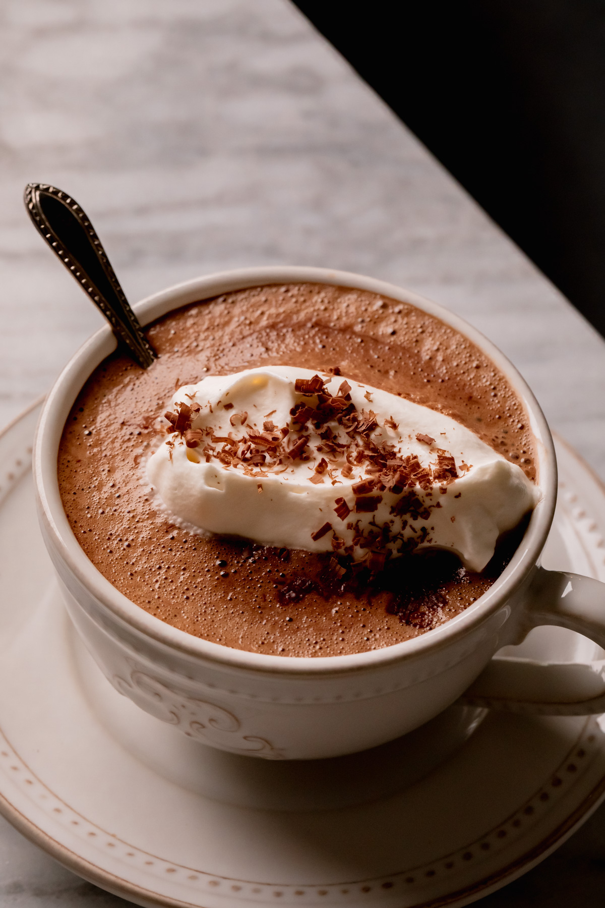

A Recipe for chocolatey goodness Mochas!

Description:
Coffee with milk but also some chocolate inside, you could make the chocolate with chocolate chips, chocolate sauce or even just regular old chocolate milk!
Ingredients:
- Coffee grounds
- Hot water
- Milk
- Some sort of chocolate
Steps:
- Use coffee grounds to make coffee
- Get about 50g of whatever chocolate you have
- Put it together in a cup
- Pour in the milk!